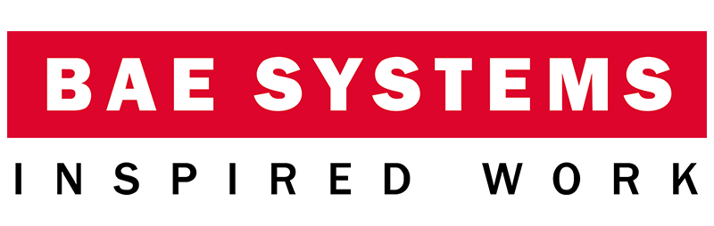

Background
Experience
Bank of America
July 2019 - Present
Technology Analyst
Technology Stack: JavaScript (ES6), HTML5, CSS3, React, Redux, RxJS, NodeJS, Webpack, Jest, JUnit
Develop UX and end-to-end workflows for products that trade across Fixed Income, Commodities and Currencies lines of business for an internal global Sales and Trading platform .
Bank of America Merrill Lynch
June 2018 - September 2018
Software Engineering Intern
Technology Stack: JavaScript (ES6), HTML5, CSS3, React, Webix-Jet, SQL
Developed a web application that provided consolidated regulatory reporting statistics across European FICC (Fixed Income, Commodities, Credit) lines of business. The algorithms implemented within the application aide in ensuring regulatory compliance and provide important insights for traders.
Won first prize for best presentation at the BAML ESG (Environmental, Social and Governance) Challenge. Produced a marketing strategy to enhance the online presence of Jojos Sanctuary, a small charity that provides care to
vulnerable children in Thailand. All the prize money was donated to Jojos Sanctuary.
BAE Systems

June 2017 - September 2017
Electrical & Electronic Engineering Intern
Liaised with subcontractors and aided naval engineers aboard Type 45 Naval Ships to successfully implement software and power infrastructure solutions, securing the longevity of several large contracts.
Hosted a conference for over 100 placement students and directors at the company headquarters in Farnborough.
Hosted, “The Schools Engineering Challenge” at Portsmouth Naval Base. Designed several engineering challenges for students from local schools to compete in, to promote engineering in schools.